Projects
Overview of the applications and projects I was involved in over the last few years. Each project pairs a quick overview with media captures so you can get a feel for the implementation, project scope, and the roles I fulfilled.
This is not an exhaustive list of all projects I have ever worked on. If you are interested in learning more about my experiences, reach out to me directly via the contact information in the contact section.
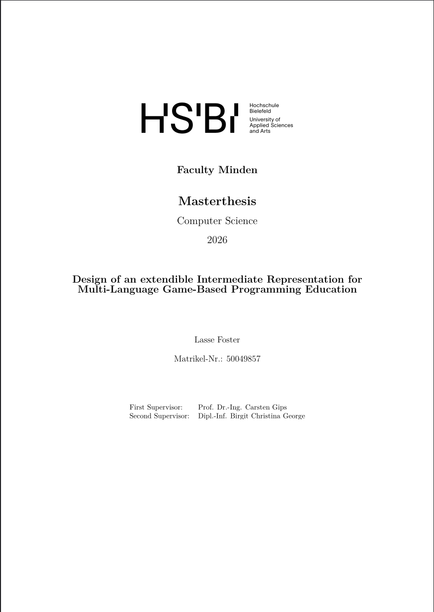
Master Thesis · Hochschule Bielefeld
DGIR: An Extensible Intermediate Representation for Educational Applications
My master's thesis focused on implementing a extensible intermediate representation for educational applications, such as interactive learning environments and custom scripting engines.
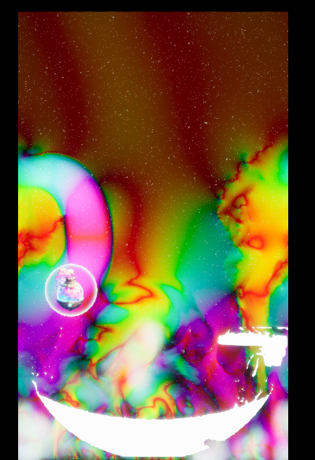
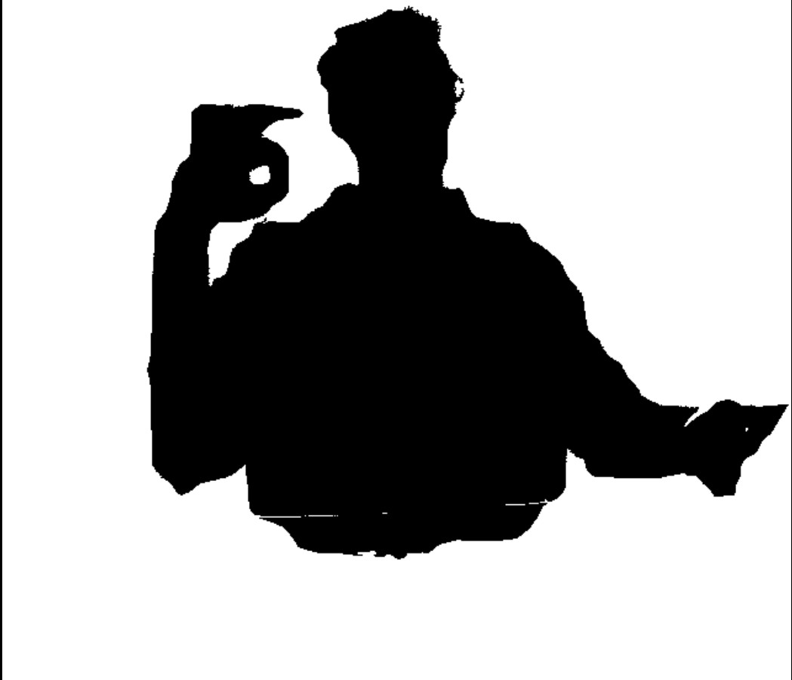
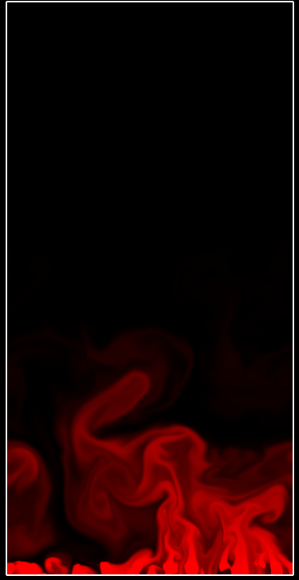
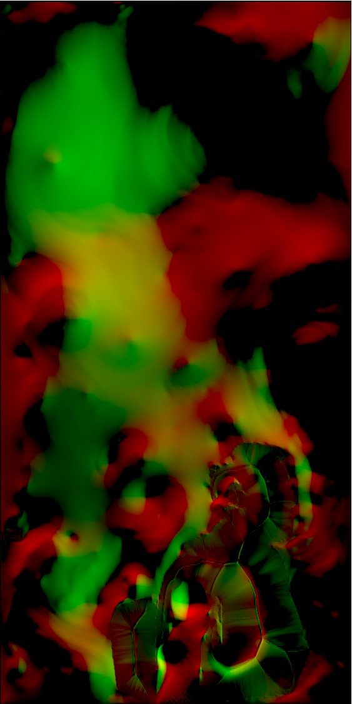
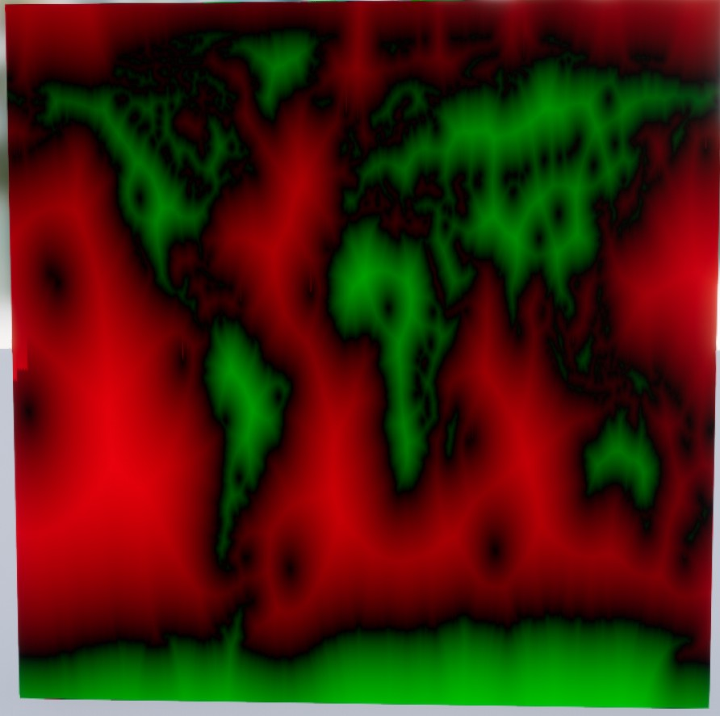
Software Developer - MESO Digital Interiors
Wetter-Werkstatt Offenbach
The Wetter-Werkstatt Offenbach is an exhibition space for weather-related content and interactive installations located in Offenbach, Germany. For the exhibition, I developed an interactive installation that provides a real-time weather pseudo-simulation in which visitors can interact with a heat and humidity based fluid and particle simulation through depth based silhouette tracking. It supported multiple users, weather presets and multiple visualization modes.
- Developed using Unreal Engine 4, with custom HLSL based computer shaders driving the simulation.
- Implemented a custom depth-based silhouette tracking system for user interaction, allowing visitors to influence the simulation through their movements.
- Designed and implemented fluid simulation, particle systems, silhouette collision systems, and various visualization modes to create an engaging and educational experience for visitors.
- Implemented silhouette extraction and processing from Kinect depth data.
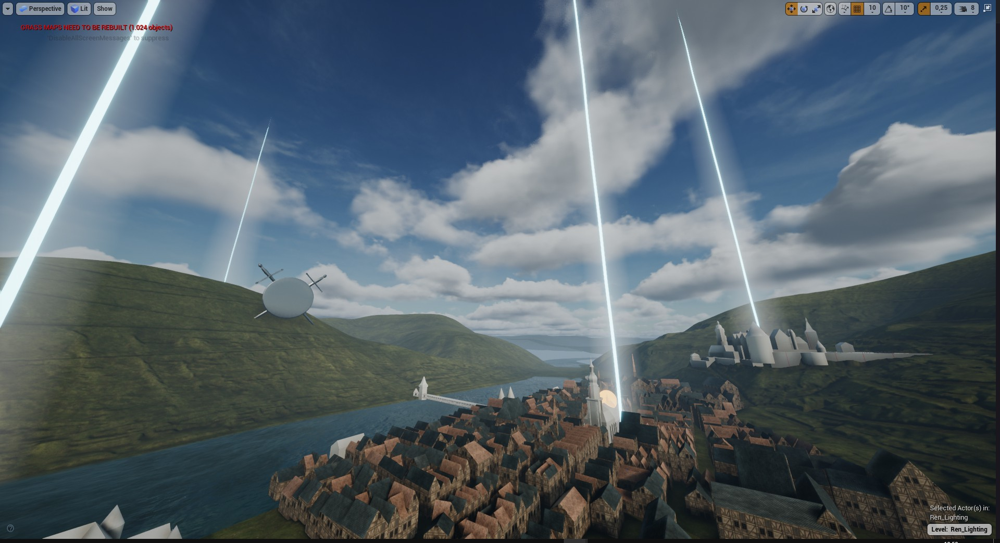
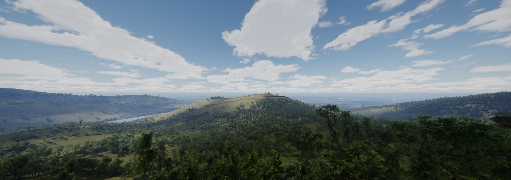
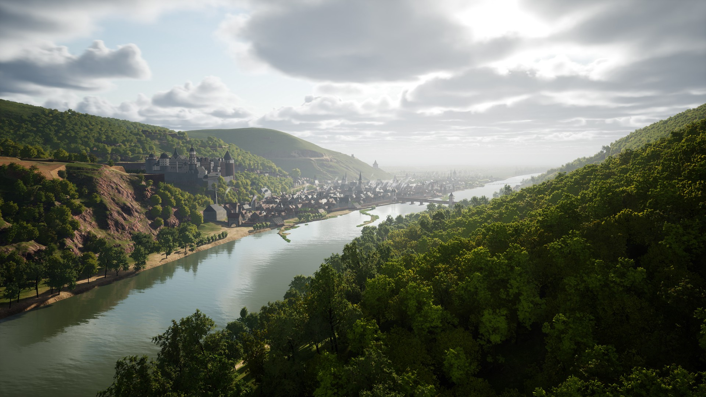
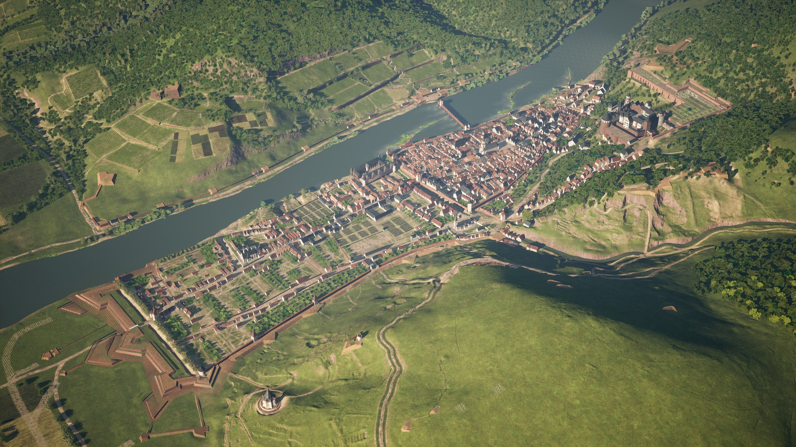
Software Developer - MESO Digital Interiors
Time Machine For Cultural History Museum
The Kurpfälzisches Museum is a museum of cultural history located in Heidelberg, Germany. For the museum, we developed an interactive installation that allows visitors to explore the architectural and cultural history of the city of Heidelberg through a highly detailed experience. The installation features an ultra-wide screen with an interactive map on a separate screen and controller based navigation for two users. I was involved in the extension and maintenance of the installation after the initial release, which focused on performance improvements and the addition of a new time period to the experience. I also developed a custom tool for the creation of new content for the installation, which allowed artists and content creators to easily add new buildings and points of interest to the experience.
- Developed using Unreal Engine 4.
- Implemented performance optimizations to maintain a stable framerate on the installation's hardware.
- Designed and implemented new content for the installation, including a period transition system and new visualization modes.
- Developed tools for artists and content creators to easily add the new content and improve performance of the existing content.


Bachelor Thesis · Hochschule Darmstadt
GPU Accelerated Wave Function Collapse
My bachelor's thesis focused on implementing a GPU-accelerated version of the Wave Function Collapse algorithm for procedural content generation.
- Final Grade: 1.0 (german grading system)
- Implemented in using Unity game engine.
- Based on the original Wave Function Collapse algorithm, implemented as compute shaders and Burst-compiled multi-threaded jobs.
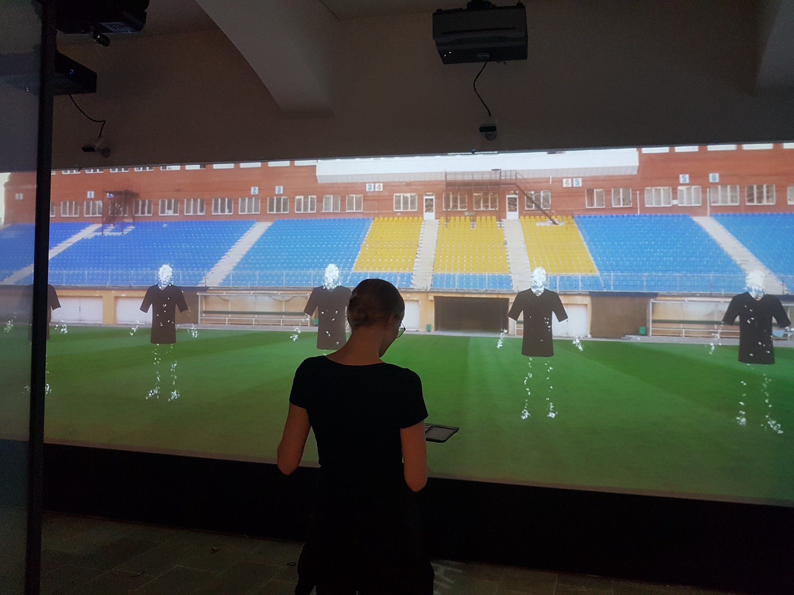
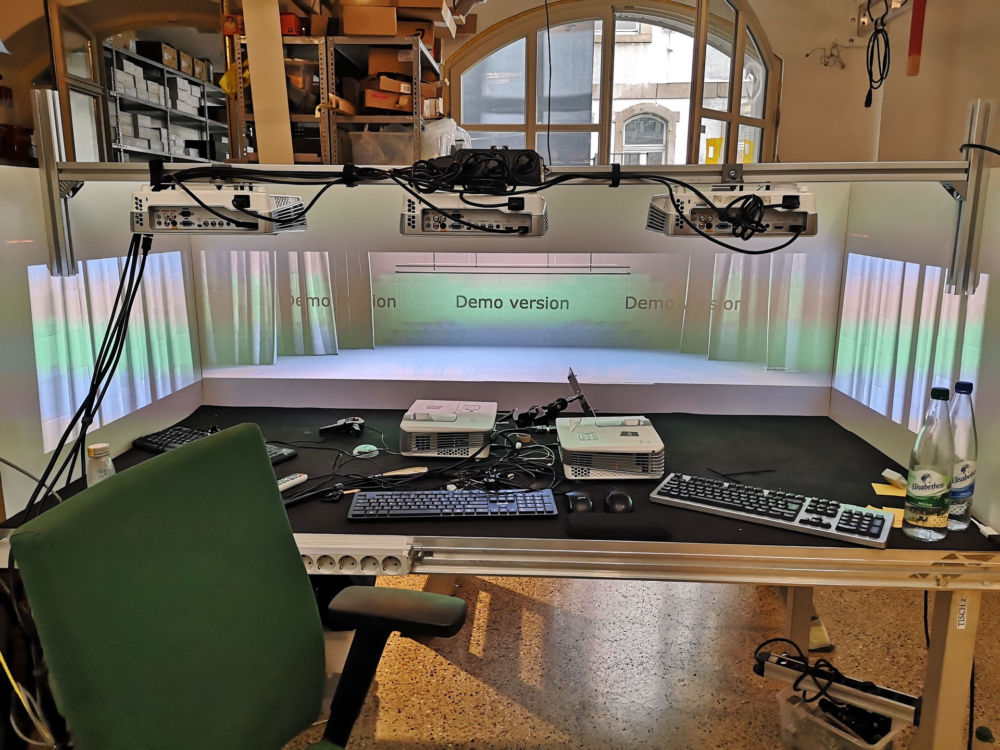
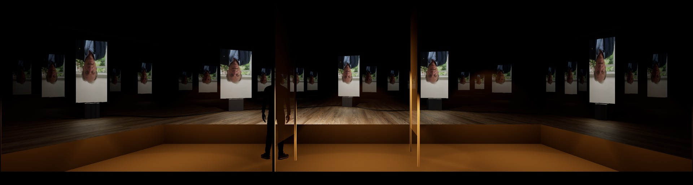
Software Developer - MESO Digital Interiors
Hegel Haus Interactive Cinema Experience
The Hegel Haus is a museum dedicated to the life and work of the philosopher Georg Wilhelm Friedrich Hegel, located in Stuttgart, Germany. For the museum, we developed an interactive cinema experience that allows visitors to explore philosophical concepts through an engaging and immersive biography. The installation features 270 degree realtime projections, Kinect tracking and liquid crystal film glass panels featuring additional content. I was onboarded after the project began development and during my mandatory internship. After an initial period of onboarding and familiarization with the project, I took over the development of large parts of the installation.
- Developed using Unreal Engine 4, nDisplay and multi-projector setups.
- Design and implementation of interactive elements and systems.
- Tool development for artists, content creators and developers.
- Preparation of greenscreen shoots with live visualization.
- On site installation.
- Troubleshooting and maintenance.

Educational · Independent
Toy Vulkan Rendering Engine
Vulkan based forward renderer with support for model loading, transformations, and simple material settings.
- Based on modern C++ and Vulkan API.
- Educational project to learn Vulkan graphics programming.
- Implementing basic rendering techniques and pipeline stages.
- Sadly, the project was not completed.
Semester Project · Hochschule Darmstadt
Market Thief
A 3D adventure game set in a bustling marketplace, with the goal of stealing items from various vendors and avoiding detection. Developed in a team of 5 people.
- Developed crowd simulation and behavior using Unity Burst-compiled jobs.
- Implemented a basic AI system for NPC behavior and decision-making.
- Designed and implemented core gameplay mechanics, including player movement and item interactions.
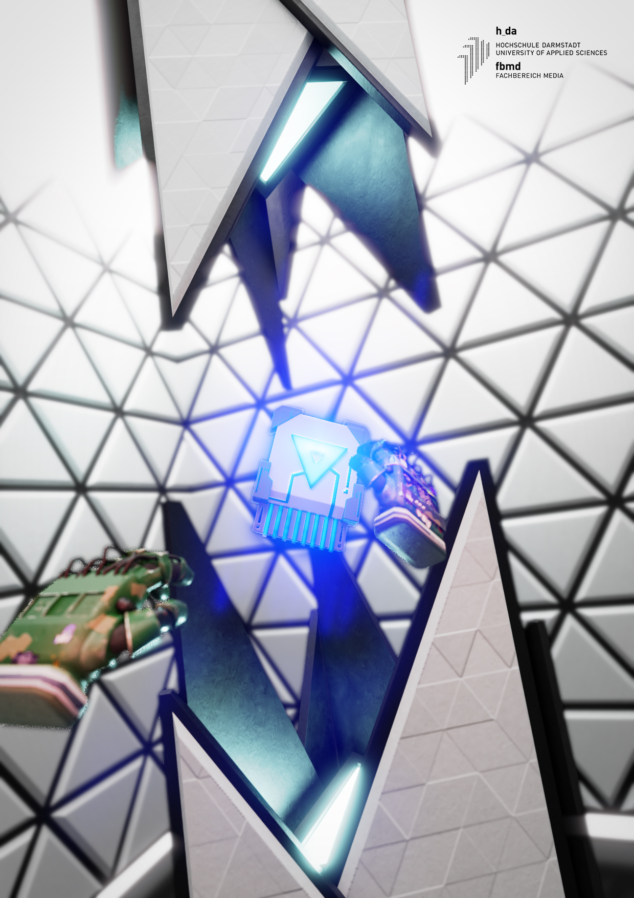
Semester Project · Hochschule Darmstadt
White Room
A virtual reality escape room experience, where players must solve puzzles and find clues to escape a minimalist white room. First ever game project and VR application I every worked on, developed in a team of 4 people.
- Developed the core VR experience and implemented interactive puzzle elements.
- Collaborated with team members to design and implement the game's narrative and storyboarding.
- Developed tooling for level design and testing, gameplay systems and UI.